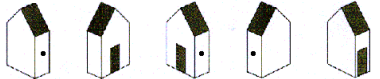

|
||
|  |
The sum of the digits in $2017$ is equal to $10$. $$ 2 + 0 + 1 + 7 = 10$$ What will be the next year where the sum of the
digits is $10$?
A five digit number has four equal digits and one different digit. The sum of the digits of this number is 43.
What is the different digit?
A jug weighs $600$ grams when it is one third filled
with water. The same jug weighs $1000$ grams when completely filled with water. How much does the jug weigh when
it is empty?
Mr. Mitchener planted five roses in a row along one side of his property. He then planted one tulip in each of the spaces
in the row between the roses.
Next, he planted one daffodil in each of the spaces between the flowers in the row.
He repeated this procedure with daisies, then marigolds, and finally with lilies.
How many flowers did Mr. Mitchener plant?